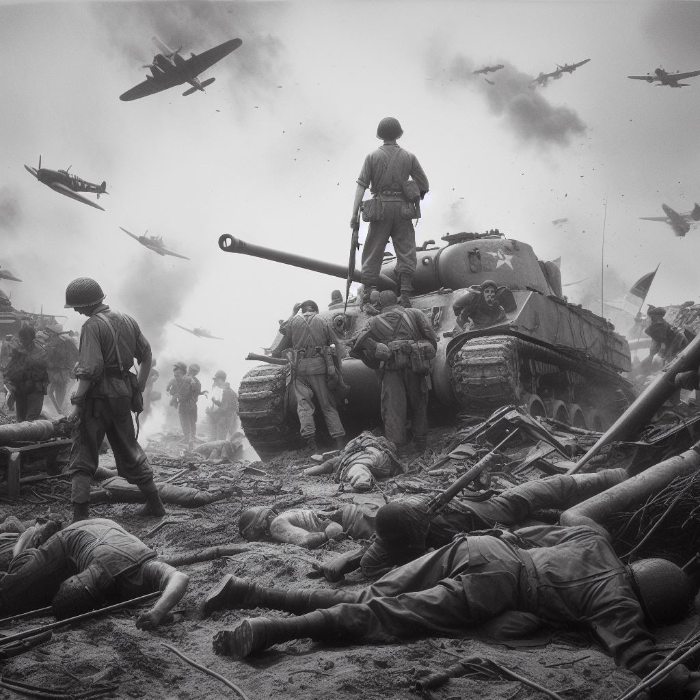

●O que foi a guerra
A Segunda Guerra Mundial foi um conflito global que ocorreu entre 1939 e 1945.
Foi travada principalmente entre as Potências Aliadas e as Potências do Eixo.
As causas incluíram o expansionismo agressivo das Potências do Eixo, disputas territoriais e ressentimentos do Tratado de Versalhes após a Primeira Guerra Mundial.
A guerra testemunhou eventos significativos, como o Holocausto, o ataque a Pearl Harbor, o Dia D e a utilização das primeiras bombas atômicas em Hiroshima e Nagasaki.
A Segunda Guerra Mundial terminou com a rendição incondicional da Alemanha em maio de 1945 e do Japão em setembro de 1945, resultando em um mundo reconfigurado com o surgimento da Guerra Fria entre os EUA e a URSS - anteriormente integrantes das Potencias Aliadas.